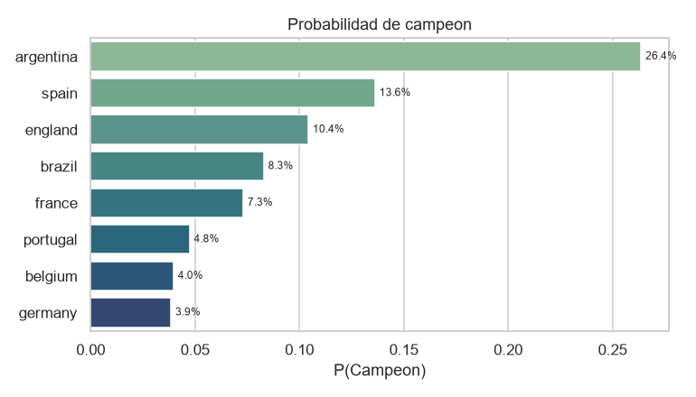

Pronostico diario - Mundial 2026
Snapshot 2026-06-18T15-55-58Z_baseline-v1-2026-06-18-6068530 - publicado 2026-06-18T15:55:58Z - modelo baseline-v1-2026-06-18-6068530
Resumen ejecutivo
Proximo bloque de partidos
| Partido | Local | Visitante | P(1) | P(X) | P(2) |
|---|---|---|---|---|---|
| WC26-025 | czechia | south-africa | 50.5% | 28.2% | 21.3% |
| WC26-026 | switzerland | bosnia-and-herzegovina | 66.1% | 21.9% | 12.0% |
| WC26-027 | canada | qatar | 63.7% | 23.2% | 13.0% |
| WC26-028 | mexico | south-korea | 41.5% | 30.7% | 27.8% |
| WC26-029 | brazil | haiti | 91.5% | 6.4% | 2.1% |
| WC26-030 | scotland | morocco | 17.1% | 31.8% | 51.1% |
| WC26-031 | turkiye | paraguay | 39.7% | 29.5% | 30.8% |
| WC26-032 | united-states | australia | 28.1% | 30.2% | 41.7% |
| WC26-033 | germany | ivory-coast | 54.2% | 26.4% | 19.4% |
| WC26-034 | ecuador | curacao | 83.8% | 13.0% | 3.2% |
| WC26-035 | netherlands | sweden | 59.5% | 21.3% | 19.2% |
| WC26-036 | tunisia | japan | 14.9% | 27.6% | 57.5% |
| WC26-037 | uruguay | cape-verde | 61.7% | 27.5% | 10.7% |
| WC26-038 | spain | saudi-arabia | 82.1% | 13.7% | 4.2% |
| WC26-039 | belgium | iran | 55.0% | 25.5% | 19.5% |
| WC26-040 | new-zealand | egypt | 15.3% | 32.3% | 52.4% |
| WC26-041 | norway | senegal | 43.4% | 28.3% | 28.3% |
| WC26-042 | france | iraq | 78.5% | 15.9% | 5.5% |
| WC26-043 | argentina | austria | 58.5% | 28.2% | 13.3% |
| WC26-044 | jordan | algeria | 13.8% | 21.0% | 65.1% |
| WC26-045 | england | ghana | 76.3% | 17.7% | 6.1% |
| WC26-046 | panama | croatia | 10.2% | 18.9% | 70.9% |
| WC26-047 | portugal | uzbekistan | 68.7% | 21.5% | 9.8% |
| WC26-048 | colombia | dr-congo | 60.2% | 27.1% | 12.6% |
| WC26-049 | scotland | brazil | 12.6% | 21.1% | 66.3% |
| WC26-050 | morocco | haiti | 79.0% | 16.2% | 4.9% |
| WC26-051 | switzerland | canada | 47.7% | 29.2% | 23.1% |
| WC26-052 | bosnia-and-herzegovina | qatar | 47.2% | 28.0% | 24.8% |
| WC26-053 | czechia | mexico | 27.5% | 29.3% | 43.2% |
| WC26-054 | south-africa | south-korea | 20.6% | 29.3% | 50.1% |
| WC26-055 | curacao | ivory-coast | 5.3% | 15.8% | 78.9% |
| WC26-056 | ecuador | germany | 27.9% | 31.4% | 40.7% |
| WC26-057 | japan | sweden | 51.1% | 25.6% | 23.3% |
| WC26-058 | tunisia | netherlands | 12.0% | 22.0% | 66.0% |
| WC26-059 | turkiye | united-states | 43.1% | 25.9% | 31.0% |
| WC26-060 | paraguay | australia | 27.6% | 34.3% | 38.1% |
| WC26-061 | norway | france | 25.9% | 26.1% | 48.0% |
| WC26-062 | senegal | iraq | 60.0% | 26.8% | 13.1% |
| WC26-063 | egypt | iran | 30.9% | 33.4% | 35.7% |
| WC26-064 | new-zealand | belgium | 5.9% | 16.6% | 77.4% |
| WC26-065 | cape-verde | saudi-arabia | 30.7% | 35.3% | 34.0% |
| WC26-066 | uruguay | spain | 18.4% | 30.0% | 51.6% |
| WC26-067 | panama | england | 4.4% | 13.1% | 82.6% |
| WC26-068 | croatia | ghana | 63.7% | 23.3% | 13.0% |
| WC26-069 | algeria | austria | 31.0% | 29.7% | 39.3% |
| WC26-070 | jordan | argentina | 2.8% | 10.5% | 86.7% |
| WC26-071 | colombia | portugal | 33.6% | 28.2% | 38.2% |
| WC26-072 | dr-congo | uzbekistan | 33.1% | 38.4% | 28.6% |
Probabilidades del torneo

| Equipo | P(R16) | P(QF) | P(SF) | P(Final) | P(Campeon) |
|---|---|---|---|---|---|
| argentina | 78.4% | 66.4% | 52.1% | 36.5% | 26.4% |
| spain | 62.9% | 47.8% | 36.6% | 23.7% | 13.6% |
| england | 72.5% | 52.7% | 32.5% | 17.4% | 10.4% |
| brazil | 68.0% | 47.3% | 28.6% | 15.4% | 8.3% |
| france | 73.0% | 46.0% | 28.5% | 15.7% | 7.3% |
| portugal | 60.9% | 39.1% | 20.2% | 10.4% | 4.8% |
| belgium | 69.8% | 42.3% | 19.9% | 9.8% | 4.0% |
| germany | 67.8% | 35.6% | 19.3% | 9.6% | 3.9% |
Evolucion temporal
Comparacion vs anterior (2026-06-13T22-07-38Z_baseline-v1-2026-06-13-50d98ab) y vs primero (2026-06-13T22-02-08Z_baseline-v1-2026-06-13-50d98ab).
| Equipo | P(Campeon) actual | vs anterior | vs primero |
|---|---|---|---|
| argentina | 26.4% | +5.0 pp | +5.0 pp |
| spain | 13.6% | -0.7 pp | -0.7 pp |
| england | 10.4% | +0.3 pp | +0.3 pp |
| brazil | 8.3% | -1.3 pp | -1.3 pp |
| france | 7.3% | +0.9 pp | +0.9 pp |
| portugal | 4.8% | -1.7 pp | -1.7 pp |
| belgium | 4.0% | -0.2 pp | -0.2 pp |
| germany | 3.9% | +0.3 pp | +0.3 pp |
Calibracion acumulada (modelo vs mercado)
Aun no hay partidos resueltos para evaluar log-loss / RPS acumulados.
Decision de modelo (upgrade gated)
Sin promocion: ningun candidato vencio al baseline en los cuatro holdouts. Se publica unicamente el baseline (resultado negativo explicito).
- Familia ganadora del gate: baseline
- Filas baseline publicadas: 48
- Filas upgrade publicadas (junto al baseline): 0
- Partidos con fallback explicito al baseline: 0
Nota metodologica
Este reporte se renderiza exclusivamente desde artefactos congelados del snapshot (2026-06-18T15-55-58Z_baseline-v1-2026-06-18-6068530) y el ledger canonico de calibracion; no reentrena el modelo ni reejecuta simulaciones. Las probabilidades del torneo provienen de 10000 simulaciones Monte Carlo (semilla 20260613) sobre el baseline Elo + Dixon-Coles. El benchmark de mercado es la mediana de-margined entre casas, congelada al publicar.